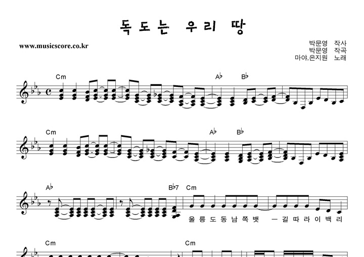

독도와 관련된 전설 중 하나는 '구멍바위' 형성에 관한 것입니다. 이 전설에 따르면, 옛날 힘센 노인이 배를 타고 다른 바위를 던지면서 구멍바위를 형성했다고 전해집니다.
대중 문화에도 독도가 영향을 끼쳤습니다. 많은 가수들이 독도에 관한 노래를 발표하며, 대한민국과 조선민주주의인민공화국에서 개발한 모바일 게임인 '독도를 지켜라'도 인기를 끌었습니다. 그리고 2016년에는 경상북도문화콘텐츠진흥원에서 애니메이션 <독도수비대 강치>를 제작하여 대중에 공개되었습니다.
